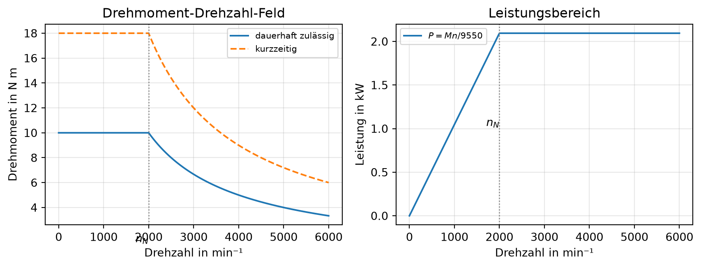
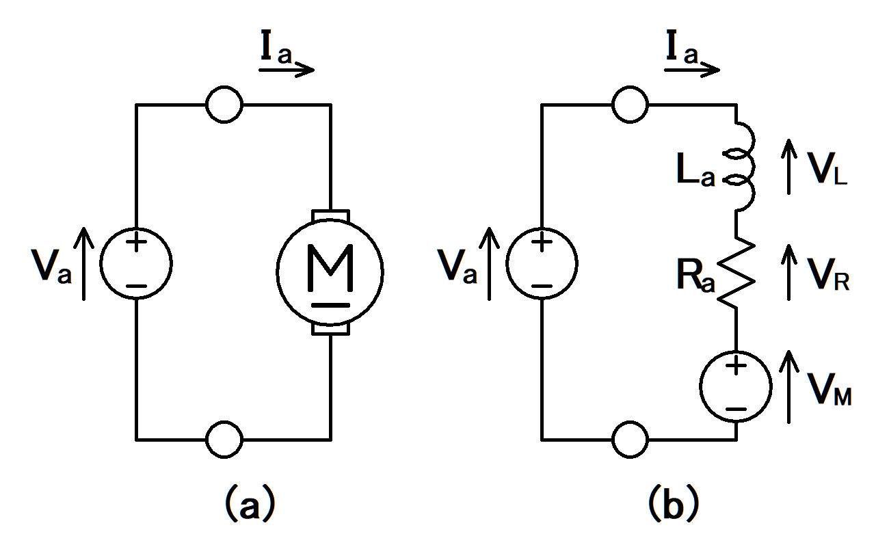
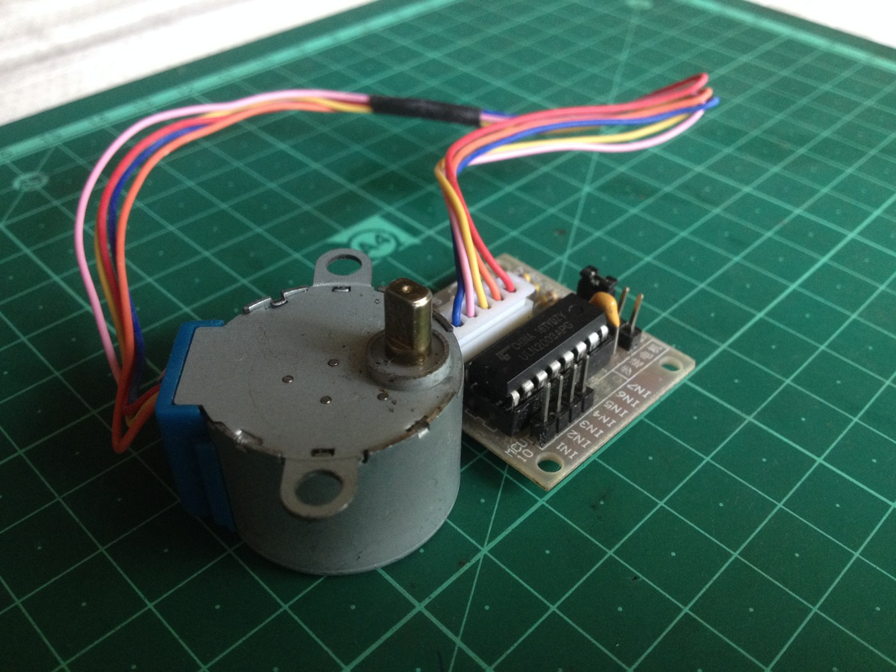
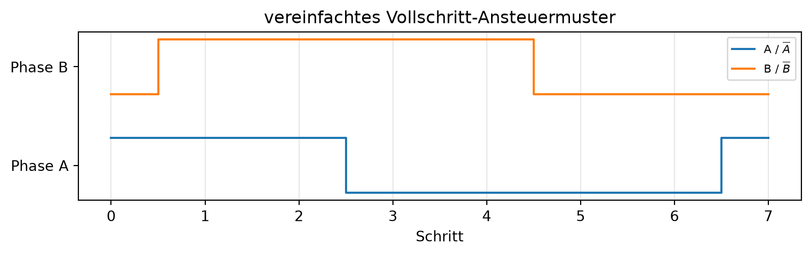

\(U\) … Ankerspannung
\(I\) … Ankerstrom
\(R\) … Ankerwiderstand
\(k\) … Motor- oder Drehmomentkonstante
\(\omega\) … Winkelgeschwindigkeit
\(n\) … Drehzahl
\(M\) … Drehmoment
\(\eta\) … Wirkungsgrad
Verwendete Symbole:
\(U\) … Ankerspannung
\(I\) … Ankerstrom
\(R\) … Ankerwiderstand
\(k\) … Motor- oder Drehmomentkonstante
\(\omega\) … Winkelgeschwindigkeit
\(n\) … Drehzahl
\(M\) … Drehmoment
\(\eta\) … Wirkungsgrad
Ein elektrischer Antrieb besteht aus mehreren verbundenen Teilsystemen:
Energieversorgung → Stellglied/Stromrichter → Elektromotor → Getriebe → Arbeitsmaschine
Der Motor wird nach Drehmoment, Drehzahl, Bewegungsauflösung, Verlustleistung, Einschaltdauer und Betriebsart ausgewählt. Die mechanische Leistung ist:
P_mech = MySymbol('P_{mech}', description='mechanische Leistung', unit=u.watt)
M_a = MySymbol('M', description='Drehmoment', unit=u.newton*u.meter)
omega_a = MySymbol(r'\omega', description='Winkelgeschwindigkeit', unit=u.radian/u.second)
QBookHelpers.print_equation(Eq(P_mech, M_a*omega_a), label='eq-antrieb-mechanische-leistung')\[ P_{mech} = M \omega \tag{9.1}\]
Für Drehzahlen in \(1/\mathrm{min}\) und Drehmoment in \(\mathrm{N\,m}\) gilt näherungsweise:
n_mech = MySymbol('n', description='Drehzahl')
M_mech = MySymbol('M', description='Drehmoment', unit=u.newton*u.meter)
P_kW = MySymbol('P', description='mechanische Leistung in kW')
QBookHelpers.print_equation(Eq(P_kW, M_mech*n_mech/9550), label='eq-antrieb-leistung-drehzahl')\[ P = \frac{M n}{9550} \tag{9.2}\]
Die ideale Kennlinie eines antriebsfähigen Systems ist eine Auswahl von Anlaufmoment, Nenndrehmoment, Nenndrehzahl und Grenzdrehzahl:
n = np.linspace(0, 6000, 600)
n_max = 6000
n_N = 2000
M_cont = np.where(n <= n_N, 10.0, 10*n_N/n)
M_limit = np.where(n <= n_N, 18.0, 18*n_N/n)
fig, (ax1, ax2) = plt.subplots(1, 2, figsize=(9, 3.5))
ax1.plot(n, M_cont, label='dauerhaft zulässig')
ax1.plot(n, M_limit, ls='--', label='kurzzeitig')
ax1.axvline(n_N, color='gray', ls=':', lw=1)
ax1.text(n_N, 1.0, '$n_N$', ha='right', va='bottom')
ax1.set_xlabel('Drehzahl in min⁻¹')
ax1.set_ylabel('Drehmoment in N m')
ax1.set_title('Drehmoment-Drehzahl-Feld')
ax1.grid(True, alpha=0.3)
ax1.legend(fontsize=8)
ax2.plot(n, M_cont*n/9550, label='$P=M n/9550$')
ax2.axvline(n_N, color='gray', ls=':', lw=1)
ax2.text(n_N, 1.0, '$n_N$', ha='right', va='bottom')
ax2.set_xlabel('Drehzahl in min⁻¹')
ax2.set_ylabel('Leistung in kW')
ax2.set_title('Leistungsbereich')
ax2.grid(True, alpha=0.3)
ax2.legend(fontsize=8)
plt.tight_layout()
plt.show()C:\Users\leo\AppData\Local\Temp\ipykernel_11548\791610115.py:4: RuntimeWarning: divide by zero encountered in divide
M_cont = np.where(n <= n_N, 10.0, 10*n_N/n)
C:\Users\leo\AppData\Local\Temp\ipykernel_11548\791610115.py:5: RuntimeWarning: divide by zero encountered in divide
M_limit = np.where(n <= n_N, 18.0, 18*n_N/n)
Beim gebürsteten DC-Motor erzeugen Permanentmagnete oder Erregerspulen das Magnetfeld. Der Strom wird über Kommutator und Kohlebürsten zur Ankerwicklung geführt; die Wicklung erzeugt dadurch kontinuierlich ein Anzugsmoment.
U_a = MySymbol('U_a', description='Ankerspannung', unit=u.volt)
R_a = MySymbol('R_a', description='Ankerwiderstand', unit=u.ohm)
I_a = MySymbol('I_a', description='Ankerstrom', unit=u.ampere)
U_i = MySymbol(r'U_i', description='induzierte Gegenspannung', unit=u.volt)
QBookHelpers.print_description([U_a, R_a, I_a, U_i])
QBookHelpers.print_equation(Eq(U_a, R_a*I_a+U_i), label='eq-dc-klemmen')
QBookHelpers.print_equation(Eq(U_i, k_s*omega_s), label='eq-dc-gegenspannung')
QBookHelpers.print_equation(Eq(M_s, k_s*I_a), label='eq-dc-drehmoment')\(U_{a}\) … Ankerspannung
\(R_{a}\) … Ankerwiderstand
\(I_{a}\) … Ankerstrom
\(U_{i}\) … induzierte Gegenspannung
\[ U_{a} = I_{a} R_{a} + U_{i} \tag{9.3}\]
\[ U_{i} = \omega k \tag{9.4}\]
\[ M = I_{a} k \tag{9.5}\]
Die Drehzahl steigt linear mit der Spannung und sinkt bei Belastung durch den Ankerwiderstand. Beim Einschalten begrenzt zunächst \(R_a\) den Strom nicht vollständig, da die Gegenspannung bei Stillstand null ist; deshalb werden Anlaufstrombegrenzung oder Stromregelung benötigt.
Leistung und Wirkungsgrad
P_el = MySymbol('P_{el}', description='aufgenommene elektrische Leistung', unit=u.watt)
P_mech2 = MySymbol('P_{mech}', description='abgegebene mechanische Leistung', unit=u.watt)
eta_dc = MySymbol(r'\eta', description='Wirkungsgrad')
QBookHelpers.print_equation(Eq(P_el, U_a*I_a), label='eq-dc-eingangsleistung')
QBookHelpers.print_equation(Eq(P_mech2, M_s*omega_s), label='eq-dc-ausgangsleistung')
QBookHelpers.print_equation(Eq(eta_dc, P_mech2/P_el), label='eq-dc-wirkungsgrad')\[ P_{el} = I_{a} U_{a} \tag{9.6}\]
\[ P_{mech} = M \omega \tag{9.7}\]
\[ \eta = \frac{P_{mech}}{P_{el}} \tag{9.8}\]

(みそがい, CC BY-SA 4.0, via Wikimedia Commons).
Beim bürstenlosen DC-Motor trägt der Läufer Permanentmagnete. Der Stator wird über Leistungsschalter elektronisch kommutiert. Die Dreieckwicklung oder Spulenanordnung wird je nach Rotorlage mit synchronem Strom angesteuert.
Gegenüber dem gebürsteten Motor entfallen mechanische Bürsten und der Kommutator. Die Elektronik übernimmt die Stromkommutierung. Typische Vorteile sind höhere Drehzahl, geringere Wartung, bessere Kühlung und höherer Wirkungsgrad.
Schrittmotoren bewegen den Rotor in diskreten Winkelschritten. Die Schrittzahl ergibt die Sollposition, solange der Motor nicht außer Tritt fällt.
alpha_step = MySymbol(r'\alpha_{step}', description='Schrittwinkel')
z_step = MySymbol('z', description='Schrittzahl')
alpha_total = MySymbol(r'\alpha_{ges}', description='Verdrehwinkel')
QBookHelpers.print_equation(Eq(alpha_step, 360/z_step), label='eq-step-winkel')
QBookHelpers.print_equation(Eq(alpha_total, z_step*alpha_step), label='eq-step-gesamtwinkel')\[ \alpha_{step} = \frac{360}{z} \tag{9.9}\]
\[ \alpha_{ges} = \alpha_{step} z \tag{9.10}\]
Die Gleichung für den Schrittwinkel ist mit dem definierten Namen zu lesen: Ein Motor mit \(200\) Vollschritten je Umdrehung hat \(\alpha_{step}=360^\circ/200=1{,}8^\circ\).

(Kushagra Keshari, CC BY-SA 4.0, via Wikimedia Commons).
Schrittbetrieb
Der unipolare Schrittmotor besitzt Mittelanzapfungen und kann je Wicklungsseite einschalten. Der bipolare Motor benötigt eine H-Brücke je Phase und liefert über beide Wicklungsrichtungen mehr Drehmoment.
phase = np.arange(8)
phase_A = np.array([1, 1, 1, 0, 0, 0, 0, 1])
phase_B = np.array([0, 1, 1, 1, 1, 0, 0, 0])
fig, ax = plt.subplots(figsize=(8, 2.6))
ax.step(phase, phase_A, where='mid', label='A / $\\overline{A}$')
ax.step(phase, phase_B+1.8, where='mid', label='B / $\\overline{B}$')
ax.set_yticks([0.5, 2.3])
ax.set_yticklabels(['Phase A', 'Phase B'])
ax.set_xticks(phase)
ax.set_xlabel('Schritt')
ax.set_title('vereinfachtes Vollschritt-Ansteuermuster')
ax.grid(True, axis='x', alpha=0.3)
ax.legend(loc='upper right', fontsize=8)
plt.tight_layout()
plt.show()
| Bauart | Vorteil | Grenze | Typische Anwendung |
|---|---|---|---|
| gebürsteter DC-Motor | einfach, hohes Drehmoment, günstig | Bürstenverschleiß, Wartung | Aktoren, Kleinantriebe |
| BLDC-Motor | wartungsarm, hohe Drehzahl, effizient | Elektronik, Rotorlage nötig | Lüfter, Drohnen, E-Auto |
| Schrittmotor | offene Positionierung, niedrige Kosten | außer Tritt möglich, Resonanz | 3D-Drucker, Positioniertische |
Eine Arbeitsrolle soll \(M=2\,\mathrm{N\,m}\) bei \(n=1500\,\mathrm{min^{-1}}\) bewegen. Dazu wird die mechanische Leistung berechnet:
M_bsp = MySymbol('M', description='Lastmoment', unit=u.newton*u.meter, value=2)
n_bsp = MySymbol('n', description='Drehzahl', value=1500)
P_bsp = MySymbol('P', description='mechanische Leistung in kW')
P_eq = Eq(P_bsp, M_bsp*n_bsp/9550)
QBookHelpers.print_values([M_bsp, n_bsp])
QBookHelpers.print_equation(P_eq, label='eq-antrieb-beispiel')
QBookHelpers.calculate_num_value(P_eq)\[M = \mathtt{\text{2}} \ \mathtt{\text{}}\]
\[n = \mathtt{\text{1,5k}} \ \mathtt{\text{k}}\]
\[ P = \frac{M n}{9550} \tag{9.11}\]
Mit \(70\,\%\) Wirkungsgrad wird die elektrische Nennleistung mindestens \(P_{el}=P_{mech}/\eta\). Die Stromaufnahme richtet sich zusätzlich nach Anlaufmoment, Beschleunigung und Wirkungsgradkurve.